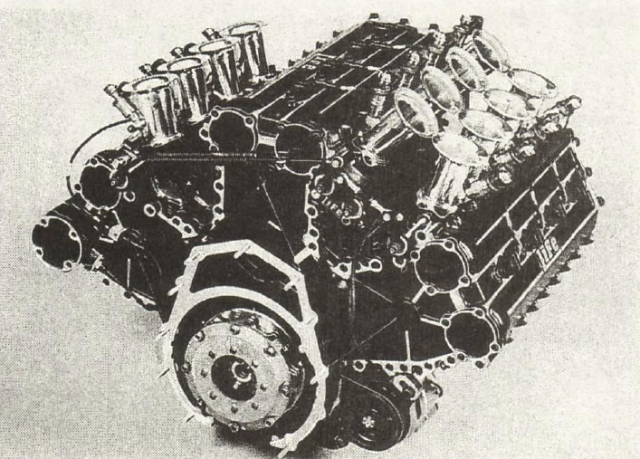

Эра турбонаддува и безумной мощности (1980-е годы)
Турбо-лихорадка
Если 1970-е стали веком аэродинамики, то 1980-е прошли под знаком безграничной мощности. На смену атмосферным моторам пришли турбированные двигатели, мощность которых в квалификационном режиме достигала фантастических 1500 лошадиных сил. Гонки превратились в безумную борьбу с невероятно быстрыми, но крайне капризными машинами.
Инженеры искали способы обойти запрет на граунд-эффект, который окончательно запретили в 1983 году. В ответ они начали использовать понтоны для охлаждения турбодвигателей и продолжили совершенствовать аэродинамику. В 1981 году Гордон Мюррей придумал гидроподвеску, позволявшую опускать болид при разгоне, что создавало эффект, схожий с граунд-эффектом, хотя конструкция часто ломалась.

Технологический прорыв
Важнейшим достижением десятилетия стал монокок из углепластика, который придумали инженеры McLaren. Этот материал оказался легче и значительно прочнее алюминия, создавая вокруг пилота практически несокрушимую капсулу безопасности.
Параллельно началась «электронная революция». Появились активная подвеска, антиблокировочная система (ABS) и система контроля тяги (Traction Control). Пилоты всё больше управляли компьютерами, а не просто машиной. Вершиной этой эры стала McLaren MP4/4, доминировавшая в чемпионате 1988 года.
Однако гонки по-прежнему оставались смертельно опасными. В 1982 году погибли Риккардо Палетти и Жиль Вильнев, а в 1986-м на тестах заживо сгорел Элио де Анджелис. Трагедии продолжались.